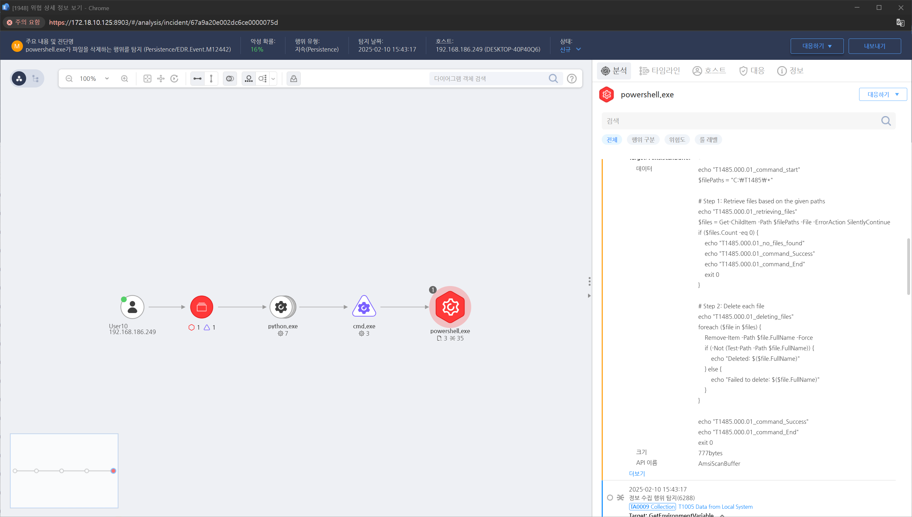

T1485.000.01 Data Destruction
D3FEND
MITRE ATT&CK 액션을 기준으로 대응 방안을 작성
Detection
- 파일을 삭제하는 행위를 탐지합니다.
- 행동 유형 : 파일 삭제
Detection(EDR)

https://172.18.10.125:8903/#/analysis/incident/67a9a20e002dc6ce0000075d
Response
- 공격자 계정 차단 및 시스템 격리
- 최근 백업에서 데이터 복구 수행
- 삭제된 데이터의 포렌식 복구 시도 (예: Recuva, TestDisk, R-Studio 활용)
- 공격자의 접근 경로 분석 및 추가 피해 방지
Mitigations
- 데이터 보호 및 백업 전략 강화
- 주기적인 백업 수행 (3-2-1 백업 전략 적용)
- 3개의 데이터 복사본 유지
- 2개의 서로 다른 저장 매체 사용
- 1개의 백업은 오프사이트 저장 (클라우드 또는 물리적 별도 저장소)
- 백업 파일을 암호화 및 무결성 보호하여 공격자가 삭제하지 못하도록 설정
- 백업 데이터에 대한 변경 및 삭제 권한을 관리자만 수행 가능하도록 제한
- 중요 파일 및 시스템 보호
- Windows: "File Integrity Monitoring (FIM)" 적용 (예: Microsoft Defender for Endpoint) Linux: chattr +i <파일> 로 중요 파일 삭제 방지
- 데이터베이스 접근 제어 강화를 위한 최소 권한 원칙 적용
- 파일 및 폴더에 대한 ACL (Access Control List) 설정
- 시스템 및 네트워크 보안 강화
- EPP/EDR/XDR 솔루션을 통해 랜섬웨어 및 악성코드 탐지 및 차단
- SIEM(Security Information and Event Management) 활용하여 비정상적인 대량 파일 삭제 탐지
- Windows 그룹 정책(GPO)에서 cmd.exe, PowerShell, sdelete.exe 실행 제한
- MFA(Multi-Factor Authentication) 적용 및 불필요한 관리자 계정 제거
Affected Techniques
Action 실행시 함께 영향을 받는 다른 Techniqes
|D3FEND|
|:-----------:|